来源：https://hq5823whbx.feishu.cn/docx/Ul12dDOgco26GHxRmdocAg1Ongb
很多经常上红书的小伙伴，一定看到过这种冰淇淋建筑，最近特别火爆！账号涨粉超级快！
后期接广或者带货，搞培训，做旅游类账号 都是可行的。
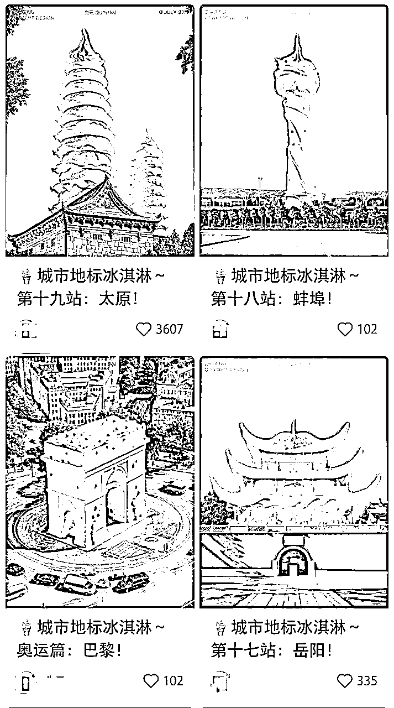
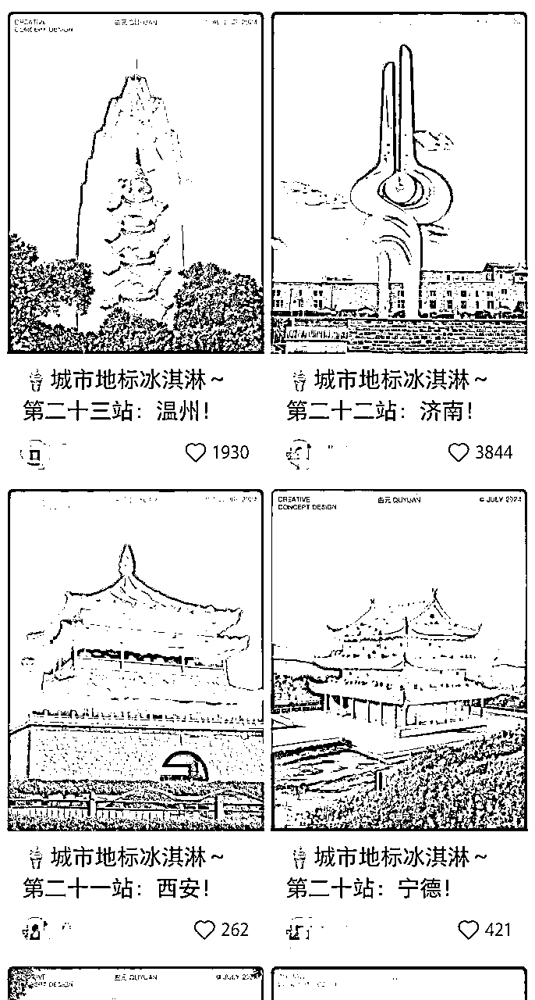
很多不会用AI的小伙伴，看到都很好奇，质疑是怎么做出来的？
其实会AI 的小伙伴 一看就知道是用AI做出来的
那么怎么做呢？
下面我们会给出最简单可行的教程，相信会AI 的小伙伴一看就会。
不会AI 的小伙伴，学AI 也非常简单，大家按我们的步骤一步一步操作 就行了
如果还有不懂的，可以问我，
先看我们做的一些图
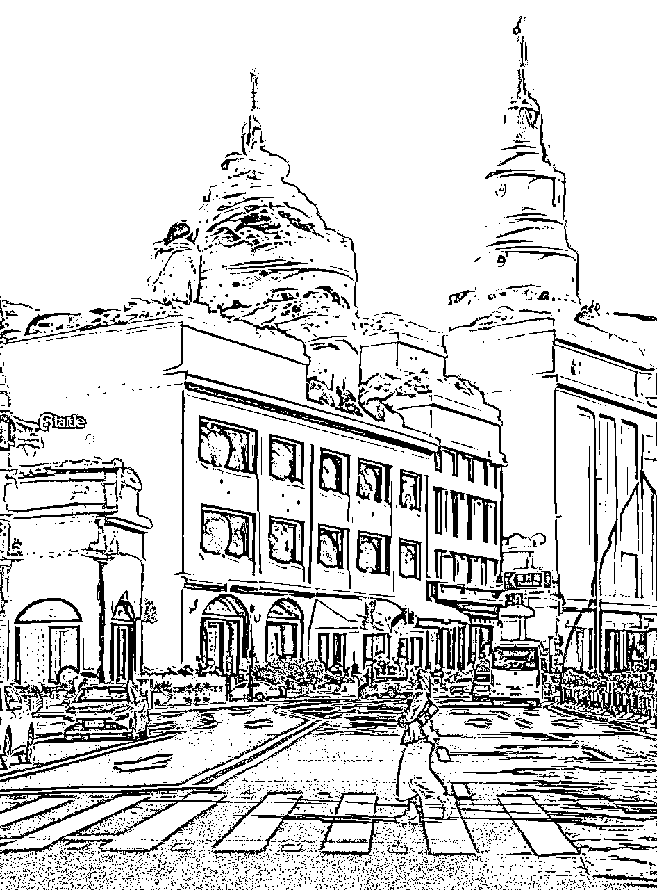
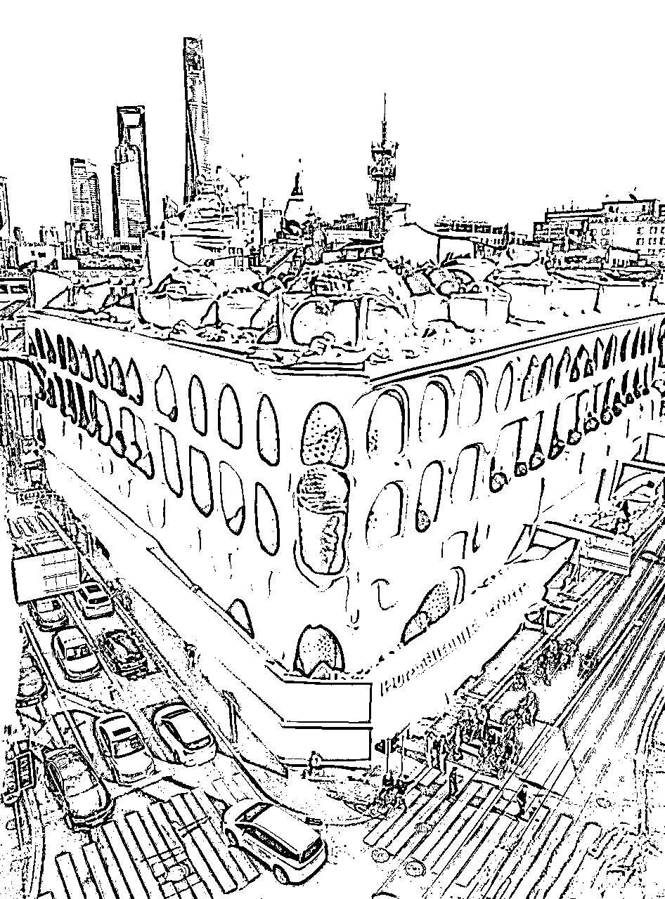
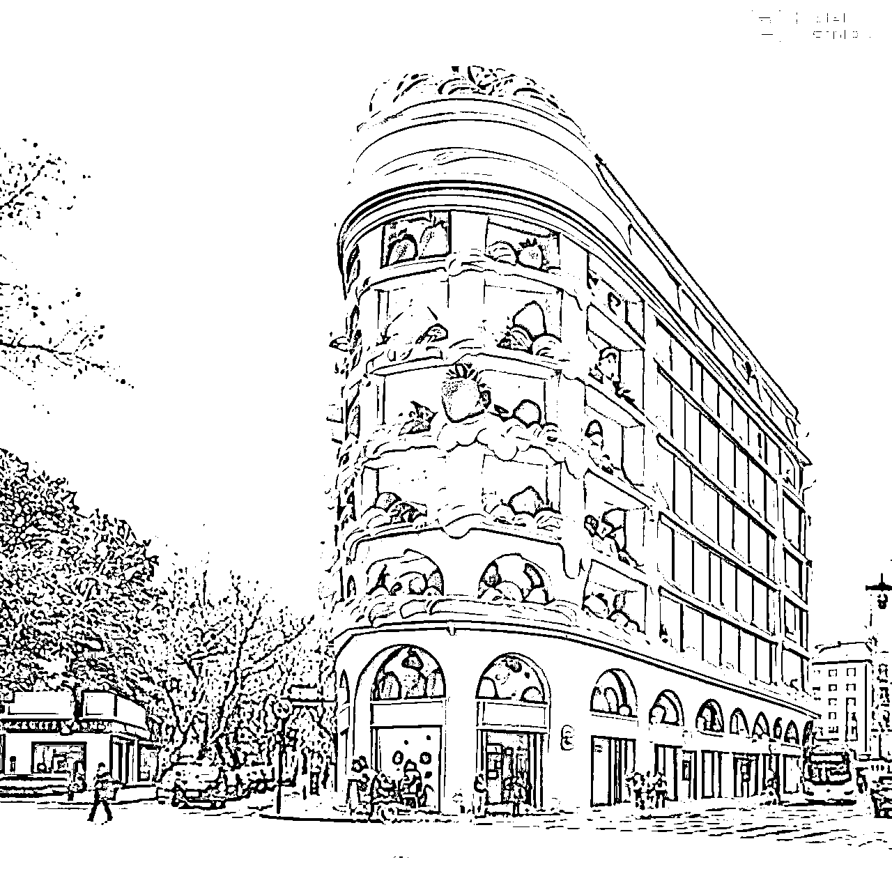
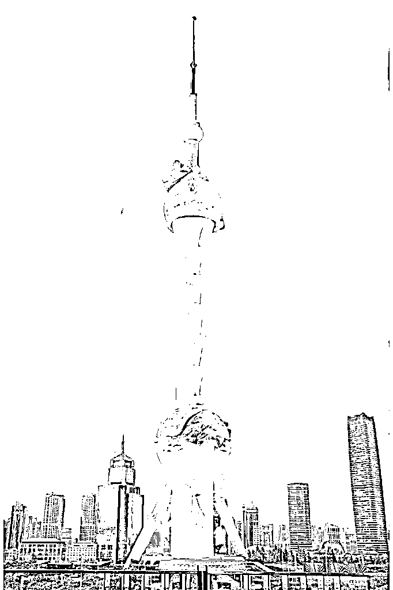
这些图是我们做的上海的一些建筑，当然只要学会方法，全国各地的建筑 咱们都能做
https://jimeng.jianying.com/
- 思考您想要的冰淇淋建筑的风格、形状、颜色和特征。
- 可以准备一些参考图片或关键词，以更清晰地传达您的想法。
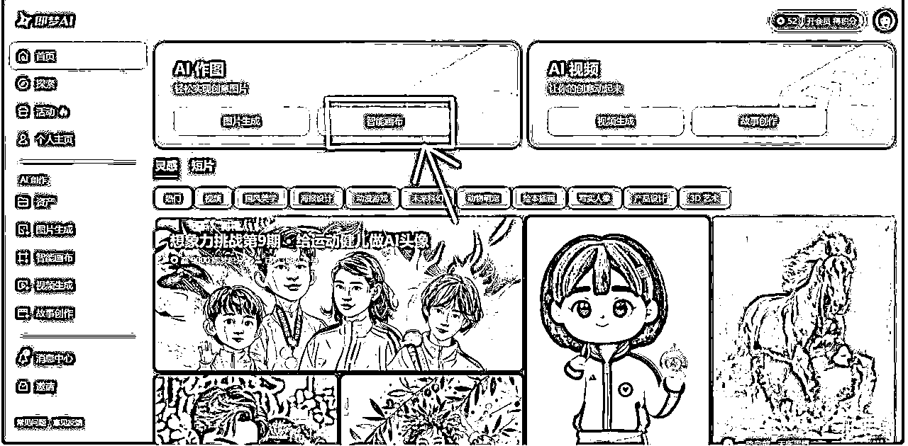
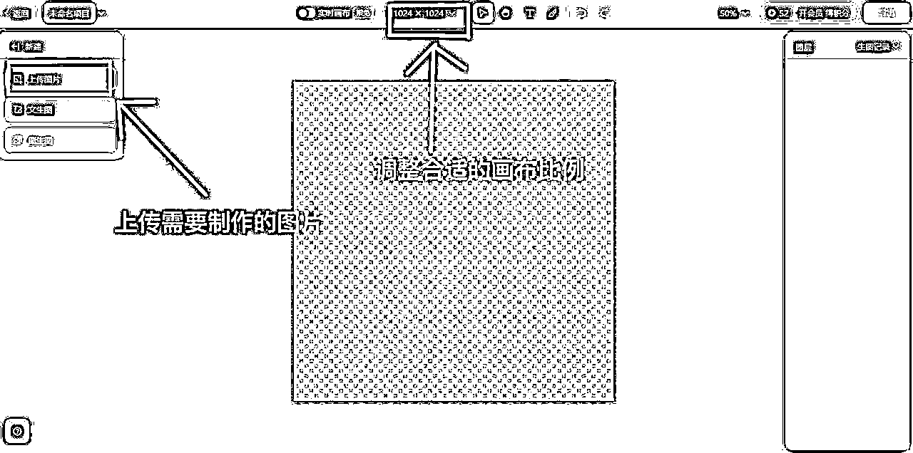
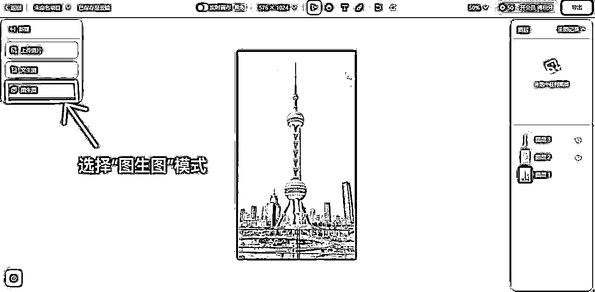
- 例如：“一座由草莓冰淇淋、巧克力冰淇淋和香草冰淇淋组成的城堡，城堡的尖顶是彩色的冰淇淋甜筒，墙壁上镶嵌着糖果和果仁，周围环绕着冰淇淋做成的花朵和喷泉。”
- 尝试使用不同的词汇和表述方式，以获得更丰富多样的结果。
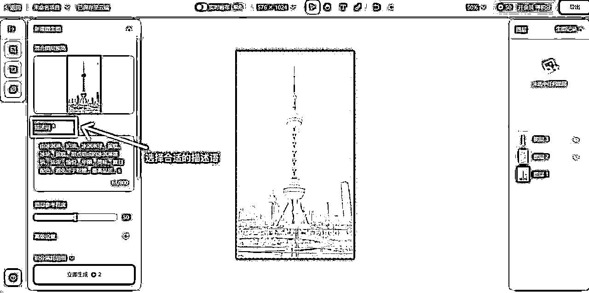
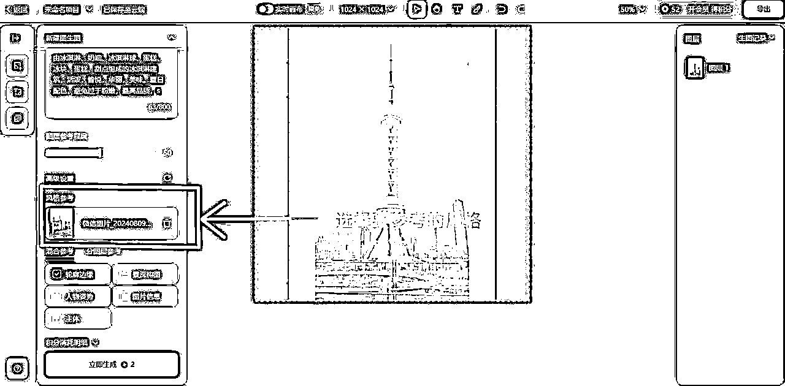
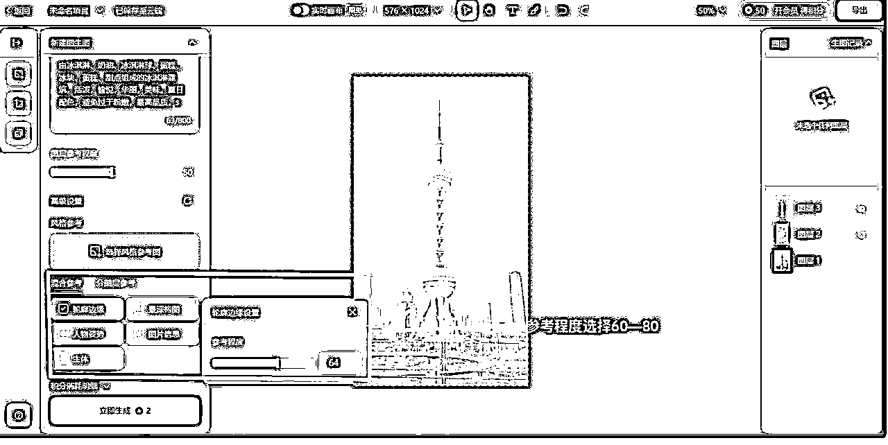
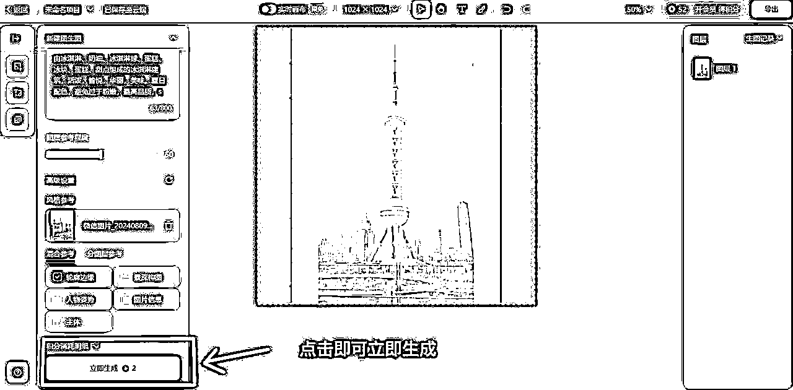
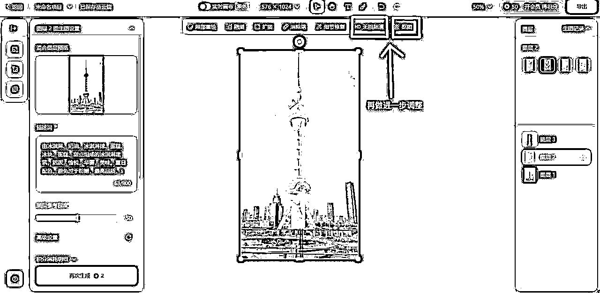
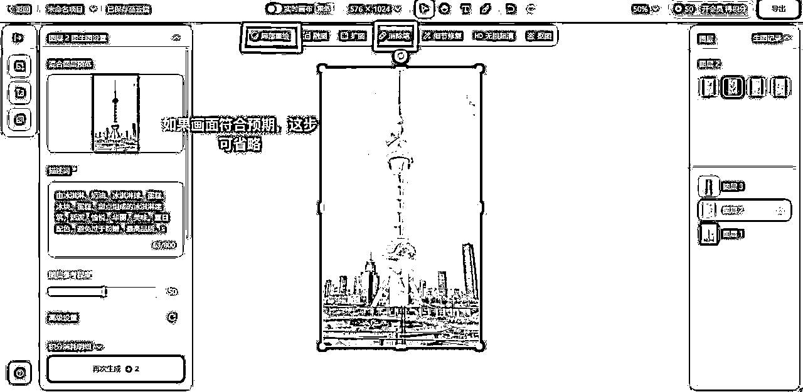
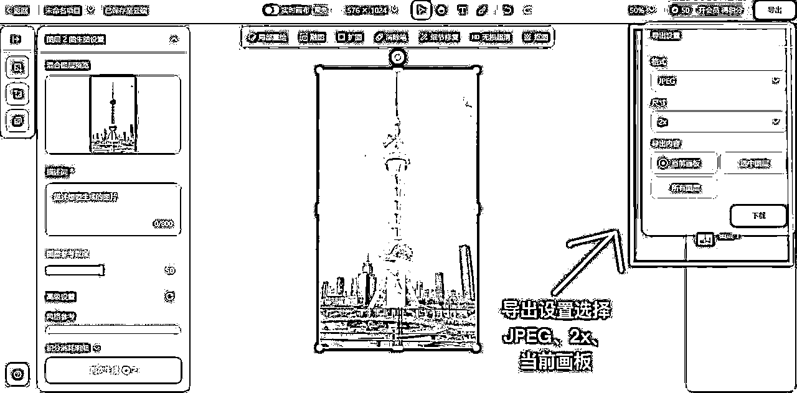
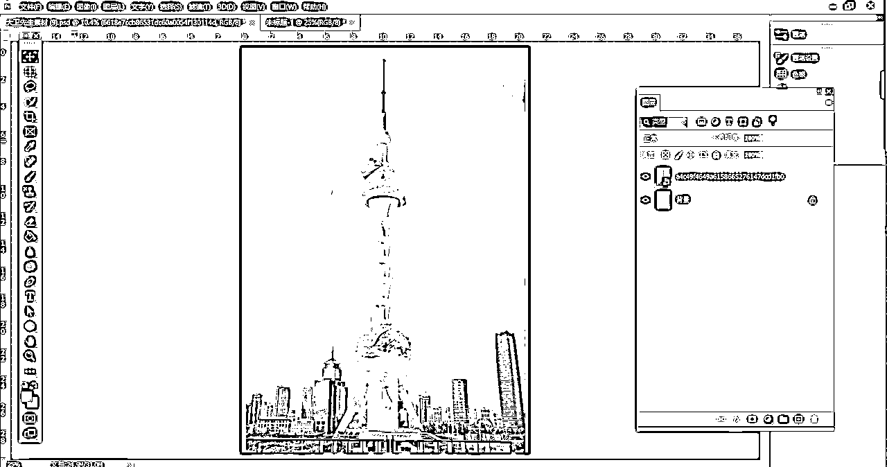
通过以上步骤，您就可以利用 AI 生成令人惊叹的冰淇淋建筑图像了。
不断尝试和创新，您将能够获得更加独特和精彩的设计！
这个教程是我们整理出来的最简单高效的教程，小伙伴们可以跟着做做看，有什么不清楚的欢迎找我解答